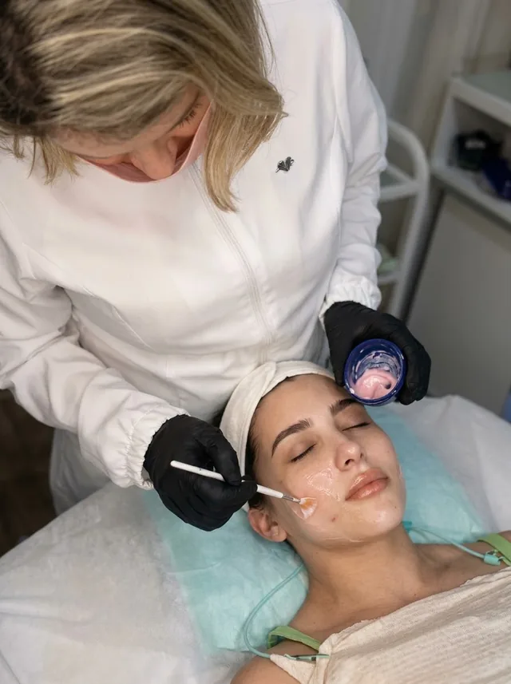
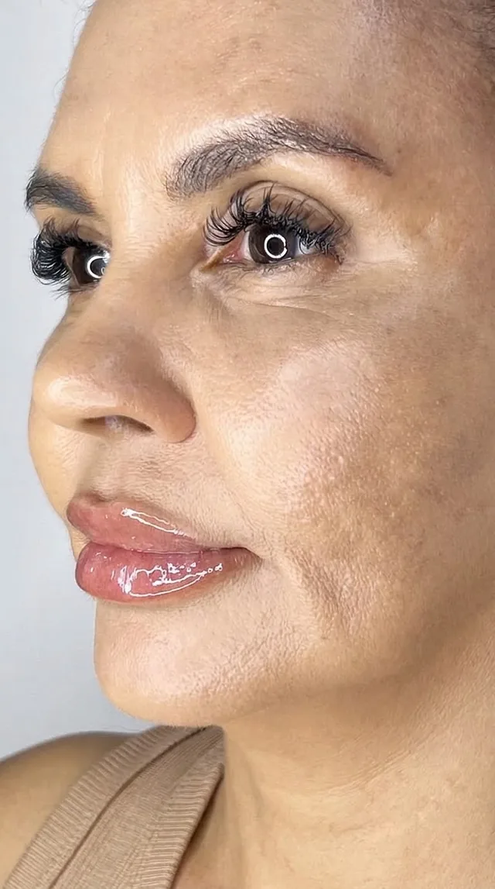
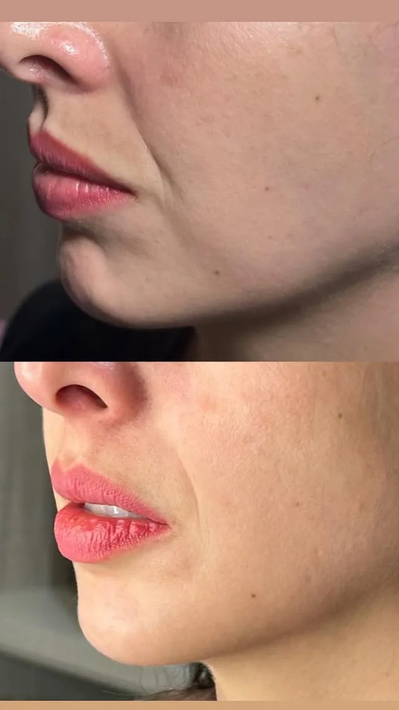

Estética Avançada
Cuidados faciais e corporais conduzidos com técnica e atenção às necessidades de cada cliente.
Falar sobre este tratamentoEstética avançada, facial e corporal
Cada pele, cada traço e cada objetivo pedem um olhar próprio. Aqui o atendimento começa por uma avaliação individual, com naturalidade e atenção em todas as etapas.


Josy Quinaia atua com estética avançada facial e corporal, com foco em um atendimento cuidadoso e individualizado.
Possui formação técnica em Estética, graduação em Estética e Cosmetologia e graduação em Biomedicina.
Atua há 7 anos na área. Antes de empreender na estética, trabalhou em Recursos Humanos sob regime CLT. Por volta dos 37 anos, decidiu mudar de área e começou a revender produtos de estética de uma marca americana, iniciativa que impulsionou sua entrada no setor.
Quatro frentes de cuidado. Os protocolos são sempre definidos após avaliação individual.

Cuidados faciais e corporais conduzidos com técnica e atenção às necessidades de cada cliente.
Falar sobre este tratamento
Avaliação das proporções do rosto, com abordagem natural e respeito à identidade de cada pessoa.
Falar sobre este tratamento
Cuidados voltados à qualidade e à aparência da pele ao longo do tempo, com planejamento personalizado.
Falar sobre este tratamento
Acompanhamento da saúde e das necessidades da sua pele, com orientação para o dia a dia.
Falar sobre este tratamentoOs resultados variam de pessoa para pessoa. Nenhum resultado é garantido.
Entender o que você sente, o que deseja e o que faz sentido para a sua rotina.
Observar pele, rosto e corpo com calma, sem protocolos prontos aplicados a todos.
Cuidar para que você continue se reconhecendo no espelho.
Envie uma mensagem e agende a sua avaliação.